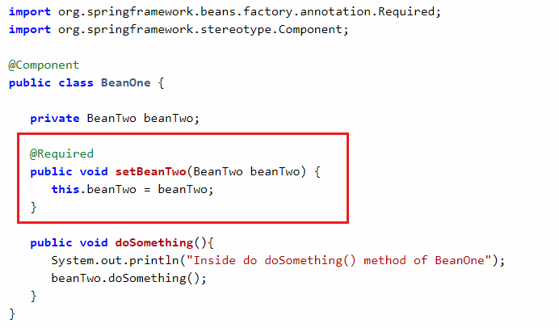

Starting from Spring 2.5 it became possible to configure the dependency injection using annotations. So instead of using XML to describe a bean wiring, you can move the bean configuration into the component class itself by using annotations on the relevant class, method, or field declaration.
Important: Annotation injection is performed before XML injection, thus the latter configuration will override the former for properties wired through both approaches.
Annotation wiring is not turned on in the Spring container by default. So, before we can use annotation-based wiring, we will need to enable it in our Spring configuration file. So consider the following configuration file in case you want to use any annotation in your Spring application.
<xml version = "1.0" encoding = "UTF-8"?>
<beans xmlns = "http://www.springframework.org/schema/beans"
xmlns:xsi = "http://www.w3.org/2001/XMLSchema-instance"
xmlns:context = "http://www.springframework.org/schema/context"
xsi:schemaLocation = "http://www.springframework.org/schema/beans
http://www.springframework.org/schema/beans/spring-beans-3.0.xsd
http://www.springframework.org/schema/context
http://www.springframework.org/schema/context/spring-context-3.0.xsd">
<context:annotation-config/>
<!-- bean definitions go here -->
</beans>
Once <context:annotation-config /> is configured, you can start
annotating
your code to indicate that Spring should automatically wire values into properties, methods, and
constructors.
Let's discuss different annotations that Spring provides to configure annotation-based metadata configuration.
The @Required annotation is method-level annotation and applied to the setter method of a bean. This annotation simply indicates that the setter method must be configured to be dependency-injected with a value at configuration time.
This annotation simply indicates that the affected bean property must be populated at configuration time, through an explicit property value in a bean definition or through autowiring.
We can use the @Autowired to mark a dependency which Spring is going to resolve and inject. We can use this annotation with a constructor, setter, or field injection.
Constructor injection:
class Car {
private Engine engine;
@Autowired
Car(Engine engine) {
this.engine = engine;
}
}
class Car {
private Engine engine;
@Autowired
void setEngine(Engine engine) {
this.engine = engine;
}
}
class Car {
@Autowired
private Engine engine;
}
Read more about the importance of @Autowired annotation on Spring @Autowired Annotation with Example
Use @Primary to give higher preference to a bean when there are multiple
beans of the same type.
Let’s describe the problem in detail.
In some cases, we need to register more than one bean of the same type.
In this example we havemySQLConnection() and oracleConnection() beans of the Connection type:
@Configuration
public class Config {
@Bean
public Connection mySQLConnection() {
return new MySQLConnection();
}
@Bean
public Connection oracleConnection() {
return new OracleConnection();
}
}
Spring throws NoUniqueBeanDefinitionException if we try to run the
application.
To access beans with the same type we usually use @Qualifier(“beanName”) annotation.
We apply to at the injection point along with @Autowired. In our case, we select the beans at the configuration phase so @Qualifier can’t be applied here. We can learn more about @Qualifier annotation by following the link.
To resolve this issue Spring offers the @Primary annotation. The following example shows how to use
@Primary annotation in a spring application.
The @Primary annotation may be used on any class directly or indirectly
annotated with @Component or on
factory methods annotated with @Bean. In this example, we will use @Primary
annotation with
@Component annotation.
Read more about the importance of @Primary annotation on Spring - @Primary
Annotation
Example
We use @Qualifier annotation to resolve ambiguous dependencies.
@Autowired annotation.@Qualifier is used to resolve ambiguous dependencies i.e, it helps @Autowired
annotations to choose one of the dependency.@Qualifier to choose
required implementation at runtime.
Example :
@Autowired
@Qualifier("datasource")
private DataSource datasource;
@Autowired
@Qualifier("datasource1")
private DataSource datasource;
Read more about the importance of @Qualifier annotation on Spring @Qualifier
Annotation Example
Spring also supports injection using the JSR-250 @Resource annotation on fields or bean property
setter methods
public class SimpleMovieLister {
private MovieFinder movieFinder;
@Resource(name="myMovieFinder")
public void setMovieFinder(MovieFinder movieFinder) {
this.movieFinder = movieFinder;
}
}
If no name is specified explicitly, the default name is derived from the field name or setter method.
Spring supports JSR-250 lifecycle annotations.
Consider DatabaseInitiaizer bean, whose init() and destroy() methods are annotated
with @PostConstruct and @PreDestroy
annotations respectively.
package net.javaguides.spring;
import java.util.ArrayList;
import java.util.Iterator;
import java.util.List;
import javax.annotation.PostConstruct;
import javax.annotation.PreDestroy;
import org.springframework.stereotype.Component;
@Component
public class DatabaseInitiaizer {
private List < User > listOfUsers = new ArrayList < > ();
@PostConstruct
public void init() {
User user = new User(1, "User");
User user1 = new User(2, "Admin");
User user2 = new User(3, "SuperAdmin");
listOfUsers.add(user);
listOfUsers.add(user1);
listOfUsers.add(user2);
System.out.println("-----------List of users added in init() method ------------");
for (Iterator < User > iterator = listOfUsers.iterator(); iterator.hasNext();) {
User user3 = (User) iterator.next();
System.out.println(user3.toString());
}
// save to database
}
@PreDestroy
public void destroy() {
// Delete from database
listOfUsers.clear();
System.out.println("-----------After of users removed from List in destroy() method ------------");
for (Iterator < User > iterator = listOfUsers.iterator(); iterator.hasNext();) {
User user3 = (User) iterator.next();
System.out.println(user3.toString());
}
}
}
Refer complete example of @PostConstruct and @PreDestroy annotations on Spring
@PostConstruct and @PreDestroy
Example
I think the answer is it depends like each approach has its pros and cons, and usually, it is up to the developer to decide which strategy suits them better. Due to the way they are defined, annotations provide a lot of context in their declaration, leading to shorter and more concise configuration. However, XML excels at wiring up components without touching their source code or recompiling them. Some developers prefer having the wiring close to the source while others argue that annotated classes are no longer POJOs and, furthermore, that the configuration becomes decentralized and harder to control.
No matter the choice, Spring can accommodate both styles and even mix them together. It’s worth pointing out
that through its JavaConfig option, Spring allows annotations to be used in a non-invasive way,
without
touching the target components source code and that in terms of tooling, all configuration styles are
supported by the Spring Tool Suite.
In this post, we have learned the what is spring annotation based container configuration, how to enable
annotation configuration and we also have seen few annotations like @Autowired, @Qualifier, @Primary,
@Required and Spring supports JSR-250 based annotations which include @Resource, @PostConstruct, and
@PreDestroy annotations.